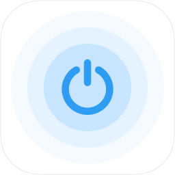

确认目标设备支持 WOL
在设备固件、网卡或系统设置中启用标准 WOL 魔术包唤醒。支持情况取决于硬件、驱动和电源状态。
可用于支持 WOL 的电脑、服务器、NAS 等设备。目标网卡在待机时需保持供电；无线网卡、USB 网卡或扩展设备需单独确认支持情况。

正在验证当前 UGOS 登录身份…
通过 NAS 唤醒局域网内的电脑等设备。
保存设备名称和网卡 MAC 地址，之后点击即可唤醒。
无需填写目标设备 IP；设备需支持标准 WOL 魔术包。
发送成功表示 NAS 已发出唤醒包，设备启动后即可尝试连接。WOL 无接收确认，无法据此判断设备是否在线。在线状态由 NAS 另行探测；未响应可能是关机、休眠或防火墙拦截。
由 NAS 按计划发送唤醒包，关闭页面后仍会执行。
选择设备、重复方式和时间，由 NAS 按计划执行。
时间按每个任务保存的时区计算。工作日指周一至周五，周末指周六、周日；不自动处理节假日调休。NAS 或应用停用期间错过的任务会跳过。
最近 100 条记录，时间按当前设备的时区显示。
记录表示 NAS 的发包结果，不代表目标设备已成功启动。
先在目标设备所在局域网验证，再通过远程访问使用。
在设备固件、网卡或系统设置中启用标准 WOL 魔术包唤醒。支持情况取决于硬件、驱动和电源状态。
可用于支持 WOL 的电脑、服务器、NAS 等设备。目标网卡在待机时需保持供电；无线网卡、USB 网卡或扩展设备需单独确认支持情况。
从目标设备的系统设置、管理界面或厂商文档中获取用于唤醒的网卡 MAC，无需填写目标设备 IP。
Windows：可在网卡属性中检查“魔术封包唤醒”，使用 PowerShell 查看网卡：
Get-NetAdapter | Select Name,MacAddress,StatusLinux：使用以下命令查看网卡名称及 MAC；WOL 支持和设置需结合网卡驱动、电源管理工具确认：
ip -br linkmacOS：可在系统设置中检查可用的“唤醒以供网络访问”选项；使用以下命令查询硬件端口及 MAC，能否接收标准 WOL 包仍需按机型实测：
networksetup -listallhardwareports其他设备：在设备管理界面或厂商文档中确认 WOL 支持、MAC 地址及可唤醒的待机状态。
让目标设备进入厂商支持网络唤醒的电源状态，并在本应用点击“唤醒”。NAS 与目标网卡需位于同一广播域；多网口或多网段环境可选择对应发送接口。
访客网络、AP 隔离、不同 VLAN 或路由可能阻挡广播。发送成功仅代表 NAS 已发包；是否启动需通过目标设备或对应管理工具确认。
通过绿联远程访问打开 NAS 上的本应用，由 NAS 向本地局域网中的目标设备发送 WOL 魔术包，可用于远程办公、工作站或服务器维护、网络存储访问及兼容设备管理。
目标设备启动后，使用已配置好的远程桌面、SSH、设备管理界面或串流工具连接。例如，电脑可搭配 UU 远程或 Sunshine + Moonlight；本应用不提供这些连接服务。
本应用通过运行中的 NAS 唤醒其他设备，不用于唤醒承载本应用的 NAS。
以下为 NAS 的广播出口。选择与目标设备同一广播域的接口，无需填写目标设备 IP。